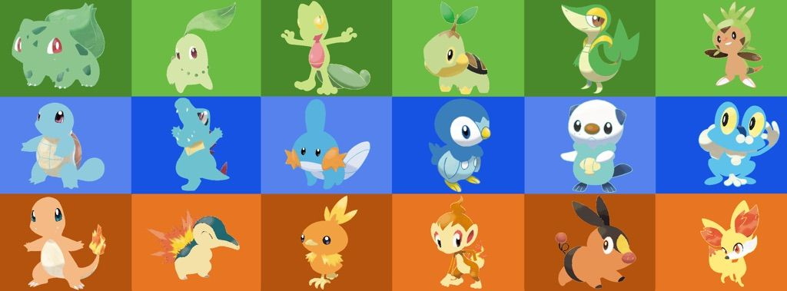

Pokemon is a game released by Nintendo, GameFreak, and Creature. The pokemon are creatures in the game. They vary in appearance. Generations are groups of new pokemon that are released together. Each generation has starter pokemon that new trainers can choose when they begin their journey. For example in the first generation the starter pokemon are Charmander, Squritle, and Bulbasaur (not that you know what they are). These pokemon are included among with 148 other pokemon released in Generation One.
